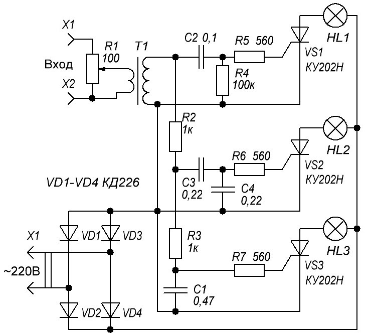
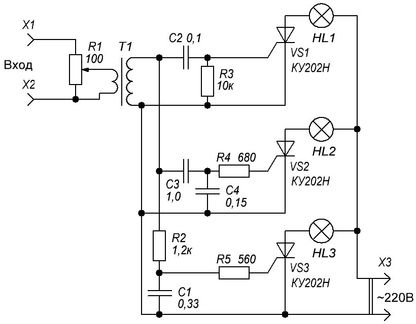

Цветомузыкальная установка на лампах накаливания (вариант 4)
Если возникнет надобность собрать ЦМУ на лампах накаливания, тогда для управления яркостью ламп нужно будет применить тиристоры.
Тиристоры, в случае, если планируется использовать с мощной нагрузкой, также необходимо крепить на теплоотвод (радиатор).Тиристор имеет резьбу с гайкой и крепится аналогично мощным диодам. Некоторые тиристоры снабжены фланцем с отверстием.
Одна из подобных схем на тиристорах приведена на рис 1. Это схема трехканальной цветомузыки с повышающим трансформатором на входе. В случае подбора аналогов тиристоров, следует смотреть на максимальное допустимое напряжение тиристоров, для данной схемы не менее 400 В.

Рис. 1 - Схема цветомузыкальной установки (вариант 1)
Таблица 1
| Обозначение | Наименование | Номинал | Количество | Примечание |
|---|---|---|---|---|
| C1 | Конденсатор | 0,47 мкФ / 400 В | 1 | |
| C2 | Конденсатор | 0,1 мкФ / 400 В | 1 | |
| C3, C4 | Конденсатор | 0,22 мкФ / 400 В | 2 | |
| HL1-HL3 | Лампочка накаливания | 220 В | 3 | |
| R1 | Переменный резистор | 100 Ом | 1 | |
| R2, R3 | Резистор постоянный | 1 кОм / 0,5 Вт | 2 | |
| R4 | Резистор постоянный | 100 кОм / 0,5 Вт | 1 | |
| R5 - R7 | Резистор | 560 Ом / 0,5 Вт | 3 | |
| T1 | Трансформатор | 1 | повышающий, разделительный | |
| VD1-VD4 | Диод выпрямительный | КД226 | 4 | |
| VS1-VS3 | Тринистор | КУ202Н | 3 |
На рисунке 2 приведена схема цветомузыки аналогичной приведенной выше. Главное отличие данной схемы - отсутствие диодного моста.

Рис. 2 - Схема цветомузыкальной установки (вариант 2)
Таблица 1
| Обозначение | Тип | Номинал | Количество | Примечание |
|---|---|---|---|---|
| C1 | Конденсатор | 0,33 мкФ / 400 В | 1 | |
| C2 | Конденсатор | 0,1 мкФ / 400 В | 1 | |
| C3 | Конденсатор | 1 мкФ / 400 В | 1 | |
| C4 | Конденсатор | 0,15 мкФ / 400 В | 1 | |
| HL1-HL3 | Лампочка накаливания | 220 В | 3 | |
| R1 | Переменный резистор | 100 Ом | 1 | |
| R2 | Резистор постоянный | 1,2 кОм / 0,5 Вт | 1 | |
| R3 | Резистор постоянный | 10 кОм / 0,5 Вт | 1 | |
| R4 | Резистор постоянный | 680 кОм / 0,5 Вт | 1 | |
| R5 | Резистор постоянный | 560 Ом /0,5 Вт | 1 | |
| T1 | Трансформатор | 1 | повышающий, разделительный | |
| VS1-VS3 | Тринистор | КУ202Н | 3 |